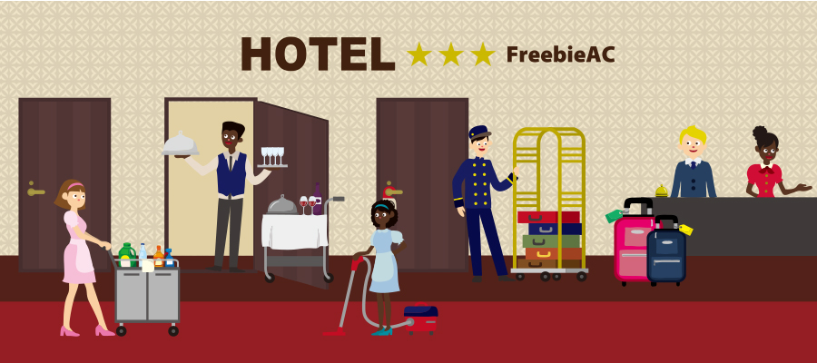

ホテル選びは楽しい作業です
どこに泊まるか？
旅行ではホテルも重要ですよね。飛行機のチケットや現地の交通機関などは、だいたい似てきますが、ホテル選びは個人差が出てきます。 「価格重視」「場所重視」「設備重視」など、人によって様々です。 私の場合「価格重視」ですが、もちろん場所や設備なども気になります。何を最優先にするかを決めておくとホテル選びはサクサク進み、楽しい作業になると思います。お勧めのサイト
国内であれば普段自分がよく利用するサイトでいいと思います。操作が慣れていたりポイントを貯めたりと、自分好みで使いやすいのが一番だと思います。 海外であればBooking.comが断然お勧めです。 操作性も良いですが、何より口コミが参考になります。 海外のホテルだと色々不安があると思いますが、口コミを見れば不安が解消出来たり、注意点も事前に分かるのでとっても便利です。 逆に言うと日本人の口コミが無い、または少ないホテルは避けるのをお勧めします。 ■Booking.com https://www.booking.com/今までの経験より
口コミを参考にしているので、残念な点は事前に把握している事が多い為、がっかりする事は少ないですが、その中でも反省する事が多いのはホテルの立地です。 多少のうるさい・高い・汚いを我慢してでも、駅近くにすべきだったなぁと思う事が多々ありました。 例えば、まだ海外旅行の経験が浅い時に夜遅くに空港に着いたのですが、街が真っ暗というだけで一気に不安になりました。 予約していたホテルへは電車等を乗継ぐ必要があったんですが、タクシーを使う勇気が無く、ヨーロッパの薄暗い鉄道に乗り見知らぬ土地で大きなスーツケースを持って歩くのは、とても緊張しました。 到着直後はテンションも高くて何でも乗り切れそうな雰囲気ですが(笑) 意外と疲れているので、多少高くても空港内もしくは空港送迎のあるホテルにすれば良かったなぁと思いました。スポンサーリンク